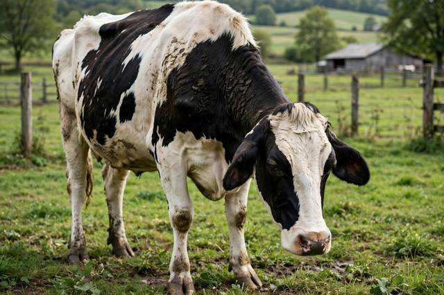
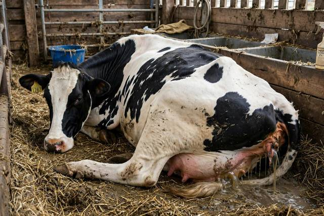

Retained fetal membranes — often called retained placenta in cows — occur when the placenta is not expelled within the expected period after calving. The condition can increase the risk of uterine infection and delayed reproductive recovery.
This guide covers clinical signs, causes, diagnosis, treatment principles and prevention.
Clinical Signs
1
Fetal membranes remain hanging from the vulva after calving(Membranes hang from the vulva instead of passing after calving)
2
Fever(High body temperature)
3
Foul discharge(Foul-smelling discharge from the uterus)
4
Reduced appetite(Cow eats less or refuses feed)
5
Systemic illness(The cow becomes dull and systemically unwell)
Fetal membranes hanging after calving

Fever

Foul dischargeReduced appetiteSystemic illness
Causes and Transmission
Risk factors include abortion, premature calving, twins, dystocia, stillbirth, nutritional imbalance and some infectious diseases. Normal timing varies, so use local veterinary definitions.
Pathogenesis
After calving, the foetal membranes (placenta) normally separate from the uterus within hours as the uterus contracts and the attachment points (cotyledons) release. Separation fails when uterine contractions are weak (milk fever, twins, difficult calving, nutritional deficiency), when the placenta is inflamed or oedematous, or when infection (such as brucellosis) has damaged the attachments.
The retained membranes hang from the vulva and decompose inside the uterus, providing a breeding ground for bacteria that cause metritis and toxaemia.
Veterinary Diagnosis
Assessment includes time since calving, general health, temperature and signs of metritis. Investigate herd-level patterns and consider infectious or nutritional causes when multiple cases occur.
Differential Diagnosis
Several conditions can look similar. A veterinarian distinguishes them by the signs, history and laboratory findings:
Postpartum metritis — causes fever and foul-smelling discharge, and often follows retained membranes.
Uterine prolapse — is the uterus itself protruding after calving, not membranes hanging from the vulva.
Brucellosis — can cause abortion with retained membranes and needs laboratory confirmation.
Normal delayed expulsion — membranes passed within about 12 hours without illness are usually normal.
Treatment and Case Management
Do not forcibly pull retained membranes because this can injure the uterus and cause bleeding. A veterinarian decides whether monitoring or treatment is needed. Treat systemic illness promptly and follow advice on milk and meat withdrawal periods.
When to seek urgent help: Fever, foul-smelling discharge, severe depression or reduced appetite after calving requires veterinary assessment.
Recommended Medicines
1
Antibiotic – Oxytetracycline(For secondary infection, only if the veterinarian advises)10 mg/kg IM daily (conventional) — or LA preparation: 20 mg/kg IM/SC once, repeat after 3–4 days if needed
2
NSAID – Flunixin meglumine(Reduces fever and pain in a systemically ill cow)2.2 mg/kg IV once daily
⚠ Important Tips:
Never pull retained membranes forcibly — it can injure the uterus and cause bleeding.
Use antibiotics only under veterinary advice.
Fever, foul discharge or reduced appetite after calving needs a vet.
Observe milk and meat withdrawal periods after any treatment.
Injection — vet-administered onlyMedicines — only as prescribed by a veterinarian
Prevention and Herd Management
Maintain transition-cow nutrition, prevent calving-pen contamination, manage difficult calvings carefully and review herd patterns with a veterinarian.
Frequently Asked Questions
What are retained fetal membranes in cows?
Retained fetal membranes occur when the placenta is not expelled within the expected period after calving. The condition can increase the risk of uterine infection and delayed reproductive recovery.
What are the signs of retained placenta in cows?
Fetal membranes remain hanging from the vulva after calving. Some cows remain bright, while others develop fever, foul discharge, reduced appetite or systemic illness.
What causes retained placenta in cattle?
Risk factors include abortion, premature calving, twins, dystocia, stillbirth, nutritional imbalance and some infectious diseases. Normal timing varies, so use local veterinary definitions.
Should retained membranes be pulled out?
No. Do not forcibly pull retained membranes, because this can injure the uterus and cause bleeding. A veterinarian decides whether monitoring or treatment is needed.
How can retained placenta in cows be prevented?
Maintain transition-cow nutrition, prevent calving-pen contamination, manage difficult calvings carefully and review herd patterns with a veterinarian.
How to remove retained placenta in cow?
Do not forcibly pull retained membranes, because this can injure the uterus and cause bleeding. A veterinarian decides whether monitoring or treatment is needed, so always consult a veterinarian.
Why is my cow placenta not coming out?
Retained placenta can follow abortion, premature calving, twins, dystocia, stillbirth, nutritional imbalance or some infectious diseases. It increases the risk of uterine infection, so a veterinarian should assess the cow.
گائے کی جیر کیوں نہیں نکلتی؟
جیر رک جانے کی وجوہات میں اسقاط حمل، قبل از وقت زچگی، جڑواں بچے، مشکل زچگی اور خوراک کی کمی شامل ہیں۔ جیر کو زبردستی نہ کھینچیں، اس سے بچہ دانی کو نقصان ہو سکتا ہے۔ فیصلہ ویٹرنری ڈاکٹر کرتا ہے۔
Key Takeaway
Early recognition, accurate diagnosis, responsible veterinary care and herd-level prevention are central to managing this condition. Follow current local veterinary authority guidance and medicine labels.
Radostits, O.M., Gay, C.C., Hinchcliff, K.W., Constable, P.D. Veterinary Medicine: A Textbook of the Diseases of Cattle, Horses, Sheep, Pigs and Goats.
FAO animal health manuals. Food and Agriculture Organization of the United Nations.
✍️ Written by Dr. Shahid Bilal Depal, DVM (PVMC RVMP #15068)
This guide is for educational purposes. Consult a registered veterinarian for diagnosis and treatment.